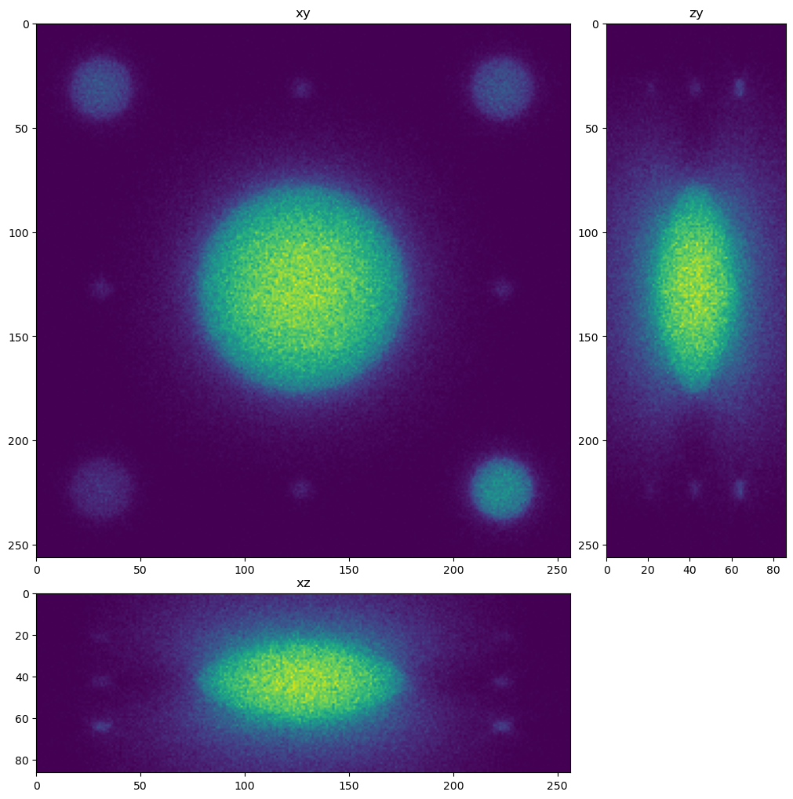
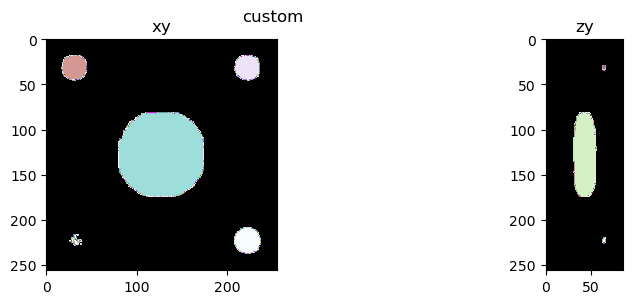
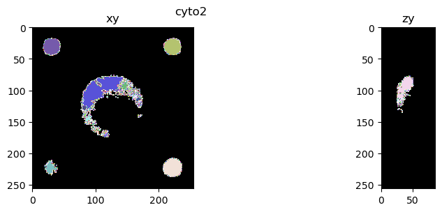
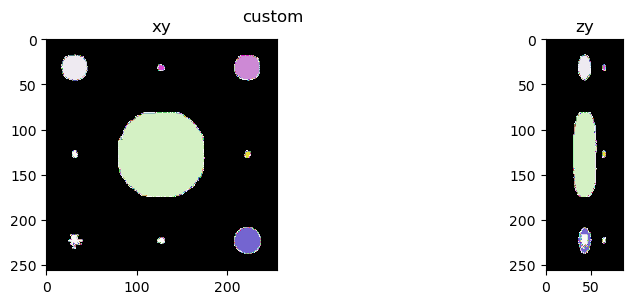
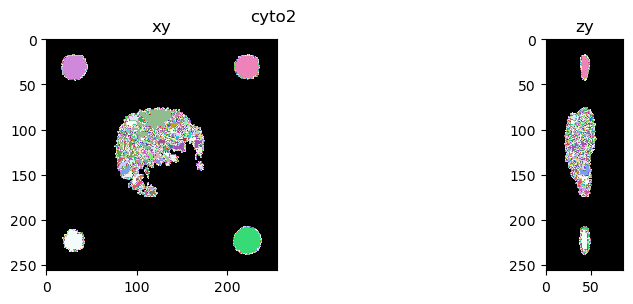

Segment with a cellpose network#
In this notebook we use a default (‘cyto2’) and custom trained cellpose network on a sample with simulated beads of different size and intensity.
from skimage.io import imread, imsave
from tnia.plotting.projections import show_xyz_slice, show_xyz_max
from cellpose import models, io
import os
import sys
sys.path.append('../')
import decon_helper as dh
from tnia.plotting.plt_helper import random_label_cmap
colormap=random_label_cmap()
Load Data#
input_names = [r'../../data/deep learning testing/inputs/spheres2.tif']
inputs=[]
for input_name in input_names:
input = imread(input_name)
nmin=input.min()
nmax=input.max()
input = (input.astype('float32')-nmin) / (nmax - nmin)
inputs.append(input)
dh.show_xyz_slice(input, 'tnia')

Load models#
Load the cellpose model that we trained for simulated beads and the cyto2 model.
parent_dl_path = r'../../models'
dl_path = r'../../models'
model_path = os.path.join(parent_dl_path, r'models')
# start logger (to see training across epochs)
logger = io.logger_setup()
models_collection = []
model_names = []
# DEFINE CELLPOSE MODEL (without size model)
model = models.CellposeModel(gpu=True, model_type=None, pretrained_model=os.path.join(model_path,'models','cellpose_try'))
models_collection.append(model)
model_names.append('custom')
model = models.CellposeModel(gpu=True, model_type='cyto2')
models_collection.append(model)
model_names.append('cyto2')
#rint(os.path.join(model_path,'models','cellpose_model1'))
creating new log file
2024-01-20 18:29:26,952 [INFO] WRITING LOG OUTPUT TO C:\Users\bnort\.cellpose\run.log
2024-01-20 18:29:26,954 [INFO]
cellpose version: 2.2.3
platform: win32
python version: 3.9.16
torch version: 2.1.2+cpu
2024-01-20 18:29:26,955 [INFO] >>>> loading model ../../models\models\models\cellpose_try
2024-01-20 18:29:26,956 [INFO] TORCH CUDA version not installed/working.
2024-01-20 18:29:26,957 [INFO] >>>> using CPU
2024-01-20 18:29:27,086 [INFO] >>>> model diam_mean = 30.000 (ROIs rescaled to this size during training)
2024-01-20 18:29:27,087 [INFO] >>>> model diam_labels = 15.622 (mean diameter of training ROIs)
2024-01-20 18:29:27,093 [INFO] >> cyto2 << model set to be used
2024-01-20 18:29:27,095 [INFO] TORCH CUDA version not installed/working.
2024-01-20 18:29:27,096 [INFO] >>>> using CPU
2024-01-20 18:29:27,221 [INFO] >>>> model diam_mean = 30.000 (ROIs rescaled to this size during training)
Apply each#
The below code block is set up to also be able to test different diameters. Right now I use a diameter of 30 (the diameter the cyto model is reported to have been trained at).
diameters = [30]
masks = []
for diameter in diameters:
for model in models_collection:
mask = model.eval(inputs[0], channels=[0,1,2],diameter=diameter, do_3D=True, anisotropy=3,flow_threshold=0.8, cellprob_threshold=-0.8 )[0]
#mask = model.eval(inputs[0], channels=[0,1,2], do_3D=True, anisotropy=3,flow_threshold=0.8, cellprob_threshold=-0.8 )[0]
masks.append(mask)
2024-01-20 18:39:54,068 [INFO] multi-stack tiff read in as having 86 planes 1 channels
2024-01-20 18:39:54,402 [INFO] running YX: 86 planes of size (256, 256)
2024-01-20 18:39:54,426 [INFO] 0%| | 0/11 [00:00<?, ?it/s]
2024-01-20 18:39:57,096 [INFO] 9%|9 | 1/11 [00:02<00:26, 2.67s/it]
2024-01-20 18:39:59,554 [INFO] 18%|#8 | 2/11 [00:05<00:22, 2.54s/it]
2024-01-20 18:40:02,246 [INFO] 27%|##7 | 3/11 [00:07<00:20, 2.61s/it]
2024-01-20 18:40:04,928 [INFO] 36%|###6 | 4/11 [00:10<00:18, 2.64s/it]
2024-01-20 18:40:07,530 [INFO] 45%|####5 | 5/11 [00:13<00:15, 2.63s/it]
2024-01-20 18:40:10,042 [INFO] 55%|#####4 | 6/11 [00:15<00:12, 2.59s/it]
2024-01-20 18:40:12,615 [INFO] 64%|######3 | 7/11 [00:18<00:10, 2.58s/it]
2024-01-20 18:40:15,245 [INFO] 73%|#######2 | 8/11 [00:20<00:07, 2.60s/it]
2024-01-20 18:40:17,875 [INFO] 82%|########1 | 9/11 [00:23<00:05, 2.61s/it]
2024-01-20 18:40:20,171 [INFO] 91%|######### | 10/11 [00:25<00:02, 2.51s/it]
2024-01-20 18:40:22,710 [INFO] 100%|##########| 11/11 [00:28<00:00, 2.52s/it]
2024-01-20 18:40:22,711 [INFO] 100%|##########| 11/11 [00:28<00:00, 2.57s/it]
2024-01-20 18:40:22,865 [INFO] running ZY: 256 planes of size (86, 256)
2024-01-20 18:40:22,930 [INFO] 0%| | 0/32 [00:00<?, ?it/s]
2024-01-20 18:40:25,532 [INFO] 3%|3 | 1/32 [00:02<01:20, 2.60s/it]
2024-01-20 18:40:28,192 [INFO] 6%|6 | 2/32 [00:05<01:19, 2.64s/it]
2024-01-20 18:40:30,779 [INFO] 9%|9 | 3/32 [00:07<01:15, 2.61s/it]
2024-01-20 18:40:33,268 [INFO] 12%|#2 | 4/32 [00:10<01:11, 2.56s/it]
2024-01-20 18:40:35,833 [INFO] 16%|#5 | 5/32 [00:12<01:09, 2.56s/it]
2024-01-20 18:40:38,307 [INFO] 19%|#8 | 6/32 [00:15<01:05, 2.53s/it]
2024-01-20 18:40:40,982 [INFO] 22%|##1 | 7/32 [00:18<01:04, 2.58s/it]
2024-01-20 18:40:43,383 [INFO] 25%|##5 | 8/32 [00:20<01:00, 2.52s/it]
2024-01-20 18:40:46,001 [INFO] 28%|##8 | 9/32 [00:23<00:58, 2.55s/it]
2024-01-20 18:40:48,441 [INFO] 31%|###1 | 10/32 [00:25<00:55, 2.52s/it]
2024-01-20 18:40:50,928 [INFO] 34%|###4 | 11/32 [00:27<00:52, 2.51s/it]
2024-01-20 18:40:53,376 [INFO] 38%|###7 | 12/32 [00:30<00:49, 2.49s/it]
2024-01-20 18:40:55,968 [INFO] 41%|#### | 13/32 [00:33<00:47, 2.52s/it]
2024-01-20 18:40:58,377 [INFO] 44%|####3 | 14/32 [00:35<00:44, 2.49s/it]
2024-01-20 18:41:00,945 [INFO] 47%|####6 | 15/32 [00:38<00:42, 2.51s/it]
2024-01-20 18:41:03,374 [INFO] 50%|##### | 16/32 [00:40<00:39, 2.49s/it]
2024-01-20 18:41:06,048 [INFO] 53%|#####3 | 17/32 [00:43<00:38, 2.54s/it]
2024-01-20 18:41:08,516 [INFO] 56%|#####6 | 18/32 [00:45<00:35, 2.52s/it]
2024-01-20 18:41:11,131 [INFO] 59%|#####9 | 19/32 [00:48<00:33, 2.55s/it]
2024-01-20 18:41:13,643 [INFO] 62%|######2 | 20/32 [00:50<00:30, 2.54s/it]
2024-01-20 18:41:16,176 [INFO] 66%|######5 | 21/32 [00:53<00:27, 2.54s/it]
2024-01-20 18:41:18,655 [INFO] 69%|######8 | 22/32 [00:55<00:25, 2.52s/it]
2024-01-20 18:41:21,198 [INFO] 72%|#######1 | 23/32 [00:58<00:22, 2.53s/it]
2024-01-20 18:41:23,768 [INFO] 75%|#######5 | 24/32 [01:00<00:20, 2.54s/it]
2024-01-20 18:41:26,200 [INFO] 78%|#######8 | 25/32 [01:03<00:17, 2.51s/it]
2024-01-20 18:41:28,884 [INFO] 81%|########1 | 26/32 [01:05<00:15, 2.56s/it]
2024-01-20 18:41:31,308 [INFO] 84%|########4 | 27/32 [01:08<00:12, 2.52s/it]
2024-01-20 18:41:33,923 [INFO] 88%|########7 | 28/32 [01:10<00:10, 2.55s/it]
2024-01-20 18:41:36,337 [INFO] 91%|######### | 29/32 [01:13<00:07, 2.51s/it]
2024-01-20 18:41:38,893 [INFO] 94%|#########3| 30/32 [01:15<00:05, 2.52s/it]
2024-01-20 18:41:41,372 [INFO] 97%|#########6| 31/32 [01:18<00:02, 2.51s/it]
2024-01-20 18:41:43,950 [INFO] 100%|##########| 32/32 [01:21<00:00, 2.53s/it]
2024-01-20 18:41:43,952 [INFO] 100%|##########| 32/32 [01:21<00:00, 2.53s/it]
2024-01-20 18:41:44,361 [INFO] running ZX: 256 planes of size (86, 256)
2024-01-20 18:41:44,430 [INFO] 0%| | 0/32 [00:00<?, ?it/s]
2024-01-20 18:41:46,899 [INFO] 3%|3 | 1/32 [00:02<01:16, 2.47s/it]
2024-01-20 18:41:49,376 [INFO] 6%|6 | 2/32 [00:04<01:14, 2.47s/it]
2024-01-20 18:41:52,074 [INFO] 9%|9 | 3/32 [00:07<01:14, 2.58s/it]
2024-01-20 18:41:54,519 [INFO] 12%|#2 | 4/32 [00:10<01:10, 2.52s/it]
2024-01-20 18:41:57,086 [INFO] 16%|#5 | 5/32 [00:12<01:08, 2.54s/it]
2024-01-20 18:41:59,619 [INFO] 19%|#8 | 6/32 [00:15<01:05, 2.54s/it]
2024-01-20 18:42:02,273 [INFO] 22%|##1 | 7/32 [00:17<01:04, 2.58s/it]
2024-01-20 18:42:04,921 [INFO] 25%|##5 | 8/32 [00:20<01:02, 2.60s/it]
2024-01-20 18:42:07,361 [INFO] 28%|##8 | 9/32 [00:22<00:58, 2.55s/it]
2024-01-20 18:42:09,883 [INFO] 31%|###1 | 10/32 [00:25<00:55, 2.54s/it]
2024-01-20 18:42:12,356 [INFO] 34%|###4 | 11/32 [00:27<00:52, 2.52s/it]
2024-01-20 18:42:14,899 [INFO] 38%|###7 | 12/32 [00:30<00:50, 2.53s/it]
2024-01-20 18:42:17,347 [INFO] 41%|#### | 13/32 [00:32<00:47, 2.50s/it]
2024-01-20 18:42:19,795 [INFO] 44%|####3 | 14/32 [00:35<00:44, 2.49s/it]
2024-01-20 18:42:22,250 [INFO] 47%|####6 | 15/32 [00:37<00:42, 2.48s/it]
2024-01-20 18:42:24,654 [INFO] 50%|##### | 16/32 [00:40<00:39, 2.45s/it]
2024-01-20 18:42:27,126 [INFO] 53%|#####3 | 17/32 [00:42<00:36, 2.46s/it]
2024-01-20 18:42:29,620 [INFO] 56%|#####6 | 18/32 [00:45<00:34, 2.47s/it]
2024-01-20 18:42:32,241 [INFO] 59%|#####9 | 19/32 [00:47<00:32, 2.52s/it]
2024-01-20 18:42:34,833 [INFO] 62%|######2 | 20/32 [00:50<00:30, 2.54s/it]
2024-01-20 18:42:37,210 [INFO] 66%|######5 | 21/32 [00:52<00:27, 2.49s/it]
2024-01-20 18:42:39,895 [INFO] 69%|######8 | 22/32 [00:55<00:25, 2.55s/it]
2024-01-20 18:42:42,313 [INFO] 72%|#######1 | 23/32 [00:57<00:22, 2.51s/it]
2024-01-20 18:42:44,783 [INFO] 75%|#######5 | 24/32 [01:00<00:19, 2.50s/it]
2024-01-20 18:42:47,251 [INFO] 78%|#######8 | 25/32 [01:02<00:17, 2.49s/it]
2024-01-20 18:42:49,831 [INFO] 81%|########1 | 26/32 [01:05<00:15, 2.52s/it]
2024-01-20 18:42:52,193 [INFO] 84%|########4 | 27/32 [01:07<00:12, 2.47s/it]
2024-01-20 18:42:54,775 [INFO] 88%|########7 | 28/32 [01:10<00:10, 2.50s/it]
2024-01-20 18:42:57,274 [INFO] 91%|######### | 29/32 [01:12<00:07, 2.50s/it]
2024-01-20 18:42:59,812 [INFO] 94%|#########3| 30/32 [01:15<00:05, 2.51s/it]
2024-01-20 18:43:02,305 [INFO] 97%|#########6| 31/32 [01:17<00:02, 2.51s/it]
2024-01-20 18:43:04,808 [INFO] 100%|##########| 32/32 [01:20<00:00, 2.51s/it]
2024-01-20 18:43:04,809 [INFO] 100%|##########| 32/32 [01:20<00:00, 2.51s/it]
2024-01-20 18:43:05,100 [INFO] network run in 191.00s
2024-01-20 18:43:06,953 [INFO] masks created in 1.85s
2024-01-20 18:43:07,721 [INFO] multi-stack tiff read in as having 86 planes 1 channels
2024-01-20 18:43:08,047 [INFO] running YX: 86 planes of size (256, 256)
2024-01-20 18:43:08,071 [INFO] 0%| | 0/11 [00:00<?, ?it/s]
2024-01-20 18:43:10,723 [INFO] 9%|9 | 1/11 [00:02<00:26, 2.65s/it]
2024-01-20 18:43:13,271 [INFO] 18%|#8 | 2/11 [00:05<00:23, 2.59s/it]
2024-01-20 18:43:15,834 [INFO] 27%|##7 | 3/11 [00:07<00:20, 2.58s/it]
2024-01-20 18:43:18,347 [INFO] 36%|###6 | 4/11 [00:10<00:17, 2.55s/it]
2024-01-20 18:43:20,894 [INFO] 45%|####5 | 5/11 [00:12<00:15, 2.55s/it]
2024-01-20 18:43:23,501 [INFO] 55%|#####4 | 6/11 [00:15<00:12, 2.57s/it]
2024-01-20 18:43:25,981 [INFO] 64%|######3 | 7/11 [00:17<00:10, 2.54s/it]
2024-01-20 18:43:28,582 [INFO] 73%|#######2 | 8/11 [00:20<00:07, 2.56s/it]
2024-01-20 18:43:31,116 [INFO] 82%|########1 | 9/11 [00:23<00:05, 2.55s/it]
2024-01-20 18:43:33,759 [INFO] 91%|######### | 10/11 [00:25<00:02, 2.58s/it]
2024-01-20 18:43:36,151 [INFO] 100%|##########| 11/11 [00:28<00:00, 2.52s/it]
2024-01-20 18:43:36,152 [INFO] 100%|##########| 11/11 [00:28<00:00, 2.55s/it]
2024-01-20 18:43:36,305 [INFO] running ZY: 256 planes of size (86, 256)
2024-01-20 18:43:36,375 [INFO] 0%| | 0/32 [00:00<?, ?it/s]
2024-01-20 18:43:38,969 [INFO] 3%|3 | 1/32 [00:02<01:20, 2.59s/it]
2024-01-20 18:43:41,541 [INFO] 6%|6 | 2/32 [00:05<01:17, 2.58s/it]
2024-01-20 18:43:44,182 [INFO] 9%|9 | 3/32 [00:07<01:15, 2.61s/it]
2024-01-20 18:43:46,787 [INFO] 12%|#2 | 4/32 [00:10<01:12, 2.61s/it]
2024-01-20 18:43:49,223 [INFO] 16%|#5 | 5/32 [00:12<01:08, 2.55s/it]
2024-01-20 18:43:51,864 [INFO] 19%|#8 | 6/32 [00:15<01:07, 2.58s/it]
2024-01-20 18:43:54,300 [INFO] 22%|##1 | 7/32 [00:17<01:03, 2.53s/it]
2024-01-20 18:43:56,937 [INFO] 25%|##5 | 8/32 [00:20<01:01, 2.56s/it]
2024-01-20 18:43:59,350 [INFO] 28%|##8 | 9/32 [00:22<00:57, 2.52s/it]
2024-01-20 18:44:01,976 [INFO] 31%|###1 | 10/32 [00:25<00:56, 2.55s/it]
2024-01-20 18:44:04,467 [INFO] 34%|###4 | 11/32 [00:28<00:53, 2.53s/it]
2024-01-20 18:44:06,966 [INFO] 38%|###7 | 12/32 [00:30<00:50, 2.52s/it]
2024-01-20 18:44:09,494 [INFO] 41%|#### | 13/32 [00:33<00:47, 2.52s/it]
2024-01-20 18:44:12,093 [INFO] 44%|####3 | 14/32 [00:35<00:45, 2.55s/it]
2024-01-20 18:44:14,648 [INFO] 47%|####6 | 15/32 [00:38<00:43, 2.55s/it]
2024-01-20 18:44:17,228 [INFO] 50%|##### | 16/32 [00:40<00:40, 2.56s/it]
2024-01-20 18:44:19,780 [INFO] 53%|#####3 | 17/32 [00:43<00:38, 2.56s/it]
2024-01-20 18:44:22,228 [INFO] 56%|#####6 | 18/32 [00:45<00:35, 2.52s/it]
2024-01-20 18:44:24,681 [INFO] 59%|#####9 | 19/32 [00:48<00:32, 2.50s/it]
2024-01-20 18:44:27,259 [INFO] 62%|######2 | 20/32 [00:50<00:30, 2.53s/it]
2024-01-20 18:44:29,887 [INFO] 66%|######5 | 21/32 [00:53<00:28, 2.56s/it]
2024-01-20 18:44:32,472 [INFO] 69%|######8 | 22/32 [00:56<00:25, 2.56s/it]
2024-01-20 18:44:34,984 [INFO] 72%|#######1 | 23/32 [00:58<00:22, 2.55s/it]
2024-01-20 18:44:37,606 [INFO] 75%|#######5 | 24/32 [01:01<00:20, 2.57s/it]
2024-01-20 18:44:40,266 [INFO] 78%|#######8 | 25/32 [01:03<00:18, 2.60s/it]
2024-01-20 18:44:42,965 [INFO] 81%|########1 | 26/32 [01:06<00:15, 2.63s/it]
2024-01-20 18:44:45,478 [INFO] 84%|########4 | 27/32 [01:09<00:12, 2.59s/it]
2024-01-20 18:44:48,128 [INFO] 88%|########7 | 28/32 [01:11<00:10, 2.61s/it]
2024-01-20 18:44:50,697 [INFO] 91%|######### | 29/32 [01:14<00:07, 2.60s/it]
2024-01-20 18:44:53,244 [INFO] 94%|#########3| 30/32 [01:16<00:05, 2.58s/it]
2024-01-20 18:44:55,837 [INFO] 97%|#########6| 31/32 [01:19<00:02, 2.59s/it]
2024-01-20 18:44:58,253 [INFO] 100%|##########| 32/32 [01:21<00:00, 2.53s/it]
2024-01-20 18:44:58,254 [INFO] 100%|##########| 32/32 [01:21<00:00, 2.56s/it]
2024-01-20 18:44:58,665 [INFO] running ZX: 256 planes of size (86, 256)
2024-01-20 18:44:58,749 [INFO] 0%| | 0/32 [00:00<?, ?it/s]
2024-01-20 18:45:01,371 [INFO] 3%|3 | 1/32 [00:02<01:21, 2.62s/it]
2024-01-20 18:45:03,965 [INFO] 6%|6 | 2/32 [00:05<01:18, 2.61s/it]
2024-01-20 18:45:06,420 [INFO] 9%|9 | 3/32 [00:07<01:13, 2.54s/it]
2024-01-20 18:45:08,975 [INFO] 12%|#2 | 4/32 [00:10<01:11, 2.54s/it]
2024-01-20 18:45:11,429 [INFO] 16%|#5 | 5/32 [00:12<01:07, 2.51s/it]
2024-01-20 18:45:13,998 [INFO] 19%|#8 | 6/32 [00:15<01:05, 2.53s/it]
2024-01-20 18:45:16,468 [INFO] 22%|##1 | 7/32 [00:17<01:02, 2.51s/it]
2024-01-20 18:45:19,042 [INFO] 25%|##5 | 8/32 [00:20<01:00, 2.53s/it]
2024-01-20 18:45:21,525 [INFO] 28%|##8 | 9/32 [00:22<00:57, 2.52s/it]
2024-01-20 18:45:24,121 [INFO] 31%|###1 | 10/32 [00:25<00:55, 2.54s/it]
2024-01-20 18:45:26,571 [INFO] 34%|###4 | 11/32 [00:27<00:52, 2.51s/it]
2024-01-20 18:45:29,137 [INFO] 38%|###7 | 12/32 [00:30<00:50, 2.53s/it]
2024-01-20 18:45:31,786 [INFO] 41%|#### | 13/32 [00:33<00:48, 2.57s/it]
2024-01-20 18:45:34,293 [INFO] 44%|####3 | 14/32 [00:35<00:45, 2.55s/it]
2024-01-20 18:45:36,806 [INFO] 47%|####6 | 15/32 [00:38<00:43, 2.54s/it]
2024-01-20 18:45:39,251 [INFO] 50%|##### | 16/32 [00:40<00:40, 2.51s/it]
2024-01-20 18:45:41,671 [INFO] 53%|#####3 | 17/32 [00:42<00:37, 2.48s/it]
2024-01-20 18:45:44,186 [INFO] 56%|#####6 | 18/32 [00:45<00:34, 2.49s/it]
2024-01-20 18:45:46,817 [INFO] 59%|#####9 | 19/32 [00:48<00:32, 2.53s/it]
2024-01-20 18:45:49,257 [INFO] 62%|######2 | 20/32 [00:50<00:30, 2.51s/it]
2024-01-20 18:45:51,786 [INFO] 66%|######5 | 21/32 [00:53<00:27, 2.51s/it]
2024-01-20 18:45:54,350 [INFO] 69%|######8 | 22/32 [00:55<00:25, 2.53s/it]
2024-01-20 18:45:56,859 [INFO] 72%|#######1 | 23/32 [00:58<00:22, 2.52s/it]
2024-01-20 18:45:59,392 [INFO] 75%|#######5 | 24/32 [01:00<00:20, 2.53s/it]
2024-01-20 18:46:01,843 [INFO] 78%|#######8 | 25/32 [01:03<00:17, 2.50s/it]
2024-01-20 18:46:04,318 [INFO] 81%|########1 | 26/32 [01:05<00:14, 2.49s/it]
2024-01-20 18:46:06,917 [INFO] 84%|########4 | 27/32 [01:08<00:12, 2.53s/it]
2024-01-20 18:46:09,385 [INFO] 88%|########7 | 28/32 [01:10<00:10, 2.51s/it]
2024-01-20 18:46:11,963 [INFO] 91%|######### | 29/32 [01:13<00:07, 2.53s/it]
2024-01-20 18:46:14,445 [INFO] 94%|#########3| 30/32 [01:15<00:05, 2.52s/it]
2024-01-20 18:46:17,000 [INFO] 97%|#########6| 31/32 [01:18<00:02, 2.53s/it]
2024-01-20 18:46:19,610 [INFO] 100%|##########| 32/32 [01:20<00:00, 2.55s/it]
2024-01-20 18:46:19,611 [INFO] 100%|##########| 32/32 [01:20<00:00, 2.53s/it]
2024-01-20 18:46:19,895 [INFO] network run in 192.14s
2024-01-20 18:46:22,090 [INFO] masks created in 2.19s
from tnia.plotting.projections import show_xy_zy_slice_center, show_xy_zy_max
for mask, name in zip(masks, model_names):
fig=show_xy_zy_slice_center(mask, colormap=colormap)
fig.suptitle(name)
for mask, name in zip(masks, model_names):
fig=show_xy_zy_max(mask, colormap=colormap)
fig.suptitle(name)




#diameters = [5, 25, 100, 30]
import napari
viewer = napari.Viewer()
viewer.add_image(inputs[0], name='input')
viewer.add_labels(masks[0], name='mask'+str(diameters[0]))
#viewer.add_labels(masks[1], name='mask'+str(diameters[1]))
#viewer.add_labels(masks[2], name='mask'+str(diameters[2]))
#viewer.add_labels(masks[3], name='mask'+str(diameters[2]))
2024-01-20 17:48:45,466 [ERROR] napari.manifest -> 'napari-hello' could not be imported: Cannot find module 'napari_plugins' declared in entrypoint: 'napari_plugins:napari.yaml'
2024-01-20 17:48:48,590 [INFO] No OpenGL_accelerate module loaded: No module named 'OpenGL_accelerate'
<Labels layer 'mask30' at 0x198a09933a0>
print(os.getcwd())
out_path = r"../../outputs/cellpose"
if not os.path.exists(out_path):
os.makedirs(out_path)
for mask, diameter in zip(masks, diameters):
imsave(os.path.join(out_path, 'cellpose_mask'+str(diameter)+'.tif'), mask.astype('uint16'))
help(model.train)
Help on method train in module cellpose.models:
train(train_data, train_labels, train_files=None, test_data=None, test_labels=None, test_files=None, channels=None, normalize=True, save_path=None, save_every=100, save_each=False, learning_rate=0.2, n_epochs=500, momentum=0.9, SGD=True, weight_decay=1e-05, batch_size=8, nimg_per_epoch=None, rescale=True, min_train_masks=5, model_name=None) method of cellpose.models.CellposeModel instance
train network with images train_data
Parameters
------------------
train_data: list of arrays (2D or 3D)
images for training
train_labels: list of arrays (2D or 3D)
labels for train_data, where 0=no masks; 1,2,...=mask labels
can include flows as additional images
train_files: list of strings
file names for images in train_data (to save flows for future runs)
test_data: list of arrays (2D or 3D)
images for testing
test_labels: list of arrays (2D or 3D)
labels for test_data, where 0=no masks; 1,2,...=mask labels;
can include flows as additional images
test_files: list of strings
file names for images in test_data (to save flows for future runs)
channels: list of ints (default, None)
channels to use for training
normalize: bool (default, True)
normalize data so 0.0=1st percentile and 1.0=99th percentile of image intensities in each channel
save_path: string (default, None)
where to save trained model, if None it is not saved
save_every: int (default, 100)
save network every [save_every] epochs
learning_rate: float or list/np.ndarray (default, 0.2)
learning rate for training, if list, must be same length as n_epochs
n_epochs: int (default, 500)
how many times to go through whole training set during training
weight_decay: float (default, 0.00001)
SGD: bool (default, True)
use SGD as optimization instead of RAdam
batch_size: int (optional, default 8)
number of 224x224 patches to run simultaneously on the GPU
(can make smaller or bigger depending on GPU memory usage)
nimg_per_epoch: int (optional, default None)
minimum number of images to train on per epoch,
with a small training set (< 8 images) it may help to set to 8
rescale: bool (default, True)
whether or not to rescale images to diam_mean during training,
if True it assumes you will fit a size model after training or resize your images accordingly,
if False it will try to train the model to be scale-invariant (works worse)
min_train_masks: int (default, 5)
minimum number of masks an image must have to use in training set
model_name: str (default, None)
name of network, otherwise saved with name as params + training start time